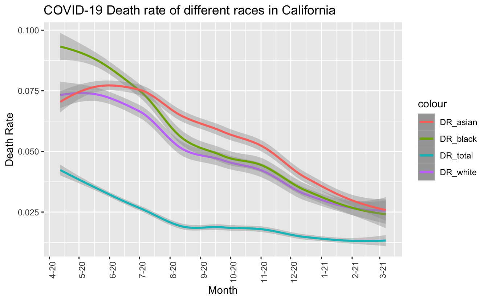

This is my PM566 Final Project website. I will showcase major finding in report here. Full report can be downloaded from the website.
This dataset is a collaboration between the COVID Tracking Project and the Boston University Center for Antiracist Research, which shows the counts of cases/deaths of COVID-19 catrgotized by races for each state in United States. The data was collected from April 12, 2020 to March 07, 2021.
I download data in csv form from The COVID Tracking Project https://covidtracking.com/race And dataset of latitude and longitude of each state is download from kaggle https://www.kaggle.com/washimahmed/usa-latlong-for-state-abbreviations
race <- fread("CRDT.csv")
state_map <- fread("statelatlong.csv")tab <- race[, .(
Total_objects = nrow(race),
NA_total = sum(is.na(race$Cases_Total)),
NA_white = sum(is.na(race$Cases_White)),
NA_black = sum(is.na(race$Cases_Black)),
NA_latinx = sum(is.na(race$Cases_Latinx)),
NA_asian = sum(is.na(race$Cases_Asian)),
NA_AIAN = sum(is.na(race$Cases_AIAN)),
NA_NHPI = sum(is.na(race$Cases_NHPI)),
NA_multi = sum(is.na(race$Cases_Multiracial))
)]
knitr::kable(tab)| Total_objects | NA_total | NA_white | NA_black | NA_latinx | NA_asian | NA_AIAN | NA_NHPI | NA_multi |
|---|---|---|---|---|---|---|---|---|
| 5320 | 232 | 652 | 733 | 3248 | 950 | 2057 | 3139 | 3795 |
Based on this table, I decided to take a close look at data of Total, White, Black and Asian since races like Latinx, AIAN, NHPI and multiracial have almost half of missing data, which is not suitable for further analysis. And for the three races categories left, I dropped all the NAs for further analysis.
I firstly created two new datasets, one is based on state(race_state) and another(race_country) is based on country. Then I calculated death rates based on races of each dataset. I also created a dataset of CA to see if pattern in CA is similar to the pattern of the whole country. And since the number of cases and deaths are cumulative, I chose the latest data(2021.03.07) and created a new dataset called “latest” to find the race with highest death rate in each state.
# pick up interested variables
race_state <- unique(race[,.(Date,State,Cases_Total,Cases_White,Cases_Black,Cases_Asian,Deaths_Total,Deaths_White,Deaths_Black,Deaths_Asian)])
# since date here shows to be integer, I changed them into str
race_state$Date = as.Date(as.character(race$Date),"%Y%m%d")
# drop NAs
race_state <- race_state[!is.na(Cases_Total) & !is.na(Cases_White) & !is.na(Cases_Black) & !is.na(Cases_Asian) & !is.na(Deaths_Total) & !is.na(Deaths_White) & !is.na(Deaths_Black) & !is.na(Deaths_Asian)]
sum(is.na(race_state))## [1] 0# Calculate total cases of different races based on date
race_country <- race_state[,.(
Case_total = sum(Cases_Total),
Case_white = sum(Cases_White),
Case_black = sum(Cases_Black),
Case_asian = sum(Cases_Asian),
Death_total = sum(Deaths_Total),
Death_white = sum(Deaths_White),
Death_black = sum(Deaths_Black),
Death_asian = sum(Deaths_Asian)
), by = Date]
# Calculate death rate
race_state [, DR_total := Deaths_Total/Cases_Total]
race_state [, DR_white := Deaths_White/Cases_White]
race_state [, DR_black := Deaths_Black/Cases_Black]
race_state [, DR_asian := Deaths_Asian/Cases_Asian]
race_country[, DR_total := Death_total/Case_total]
race_country[, DR_white := Death_white/Case_white]
race_country[, DR_black := Death_black/Case_black]
race_country[, DR_asian := Death_asian/Case_asian]
# Stick to CA data
CA <- filter(race_state, State == "CA")
# Race with highest DR in each state.
latest <- filter(race_state, Date == "2021-03-07")
latest <- latest[, highest_DR :=
fifelse(DR_white == max(DR_white,DR_black,DR_asian),"White",
fifelse(DR_black == max(DR_white,DR_black,DR_asian),"Black","Asian"
)), by = State]ggplot(data = race_country) +
geom_smooth(mapping = aes(x = Date, y = DR_white, color = "DR_white"))+
geom_smooth(mapping = aes(x = Date, y = DR_black, color = "DR_black"))+
geom_smooth(mapping = aes(x = Date, y = DR_asian, color = "DR_asian"))+
geom_smooth(mapping = aes(x = Date, y = DR_total,color = "DR_total"))+
labs(x = "Month", y = "Death Rate")+
labs(title = "COVID-19 Death rate of different races in United States")+
theme(axis.text.x = element_text(angle=90, hjust=1, vjust=1))+
scale_x_date(date_breaks = "months" , date_labels = "%b-%y")From this graph, we can see that the trend of all DR is gradually decreasing, the total death rate is always the lowest one since there are a lot of cases of other or unknown races which largely increase the denominator. And although death rate of white is higher than the other two races initially, they approach to the same level finally with a little bit of difference.
ggplot(data = CA) +
geom_smooth(mapping = aes(x = Date, y = DR_white, color = "DR_white"))+
geom_smooth(mapping = aes(x = Date, y = DR_black, color = "DR_black"))+
geom_smooth(mapping = aes(x = Date, y = DR_asian, color = "DR_asian"))+
geom_smooth(mapping = aes(x = Date, y = DR_total,color = "DR_total"))+
labs(x = "Month", y = "Death Rate")+
labs(title = "COVID-19 Death rate of different races in California")+
theme(axis.text.x = element_text(angle=90, hjust=1, vjust=1))+
scale_x_date(date_breaks = "months" , date_labels = "%b-%y")
The general trend is similar to that of country but it seems that four lines go up slightly at last. But we can still see a trend of DR of three races approaching to the same level at the final stage of the data.
tab <- latest[, .(
State = State,
DR_total = DR_total,
DR_white = DR_white,
DR_black = DR_black,
DR_asian = DR_asian
)]
knitr::kable(tab)| State | DR_total | DR_white | DR_black | DR_asian |
|---|---|---|---|---|
| AK | 0.0051406 | 0.0069399 | 0.0060040 | 0.0118512 |
| AL | 0.0203033 | 0.0294985 | 0.0268511 | 0.0105587 |
| AR | 0.0163753 | 0.0200919 | 0.0154203 | 0.0123584 |
| AZ | 0.0197567 | 0.0261499 | 0.0167992 | 0.0184548 |
| CA | 0.0154578 | 0.0303423 | 0.0294305 | 0.0327237 |
| CO | 0.0137369 | 0.0212970 | 0.0151143 | 0.0179519 |
| CT | 0.0270003 | 0.0633329 | 0.0461045 | 0.0274925 |
| DC | 0.0248678 | 0.0098058 | 0.0383356 | 0.0153173 |
| DE | 0.0166716 | 0.0242453 | 0.0166431 | 0.0059718 |
| GA | 0.0174951 | 0.0280037 | 0.0244460 | 0.0166592 |
| HI | 0.0159550 | 0.0109709 | 0.0068966 | 0.0402109 |
| IA | 0.0163629 | 0.0257178 | 0.0131501 | 0.0179570 |
| ID | 0.0108656 | 0.0176252 | 0.0089286 | 0.0139459 |
| IL | 0.0192050 | 0.0259433 | 0.0331343 | 0.0272217 |
| IN | 0.0190885 | 0.0201121 | 0.0211149 | 0.0077890 |
| KS | 0.0162644 | 0.0177400 | 0.0163992 | 0.0115837 |
| KY | 0.0117334 | 0.0138986 | 0.0138005 | 0.0062500 |
| LA | 0.0224720 | 0.0265559 | 0.0272827 | 0.0044953 |
| MA | 0.0277616 | 0.0547782 | 0.0302473 | 0.0258121 |
| MD | 0.0205386 | 0.0302754 | 0.0244214 | 0.0312394 |
| ME | 0.0154169 | 0.0165973 | 0.0044405 | 0.0059761 |
| MI | 0.0253905 | 0.0296323 | 0.0488960 | 0.0172747 |
| MN | 0.0133670 | 0.0165998 | 0.0081703 | 0.0120633 |
| MO | 0.0169793 | 0.0204635 | 0.0252862 | 0.0155200 |
| MS | 0.0228778 | 0.0260481 | 0.0272974 | 0.0127208 |
| MT | 0.0136849 | 0.0134534 | 0.0021739 | 0.0029240 |
| NC | 0.0131877 | 0.0161873 | 0.0181097 | 0.0088106 |
| NE | 0.0103716 | 0.0130129 | 0.0113348 | 0.0106800 |
| NH | 0.0154044 | 0.0281319 | 0.0126829 | 0.0115830 |
| NJ | 0.0290103 | 0.0481572 | 0.0535786 | 0.0387883 |
| NM | 0.0203721 | 0.0339408 | 0.0207627 | 0.0159953 |
| NV | 0.0170060 | 0.0251505 | 0.0207908 | 0.0244575 |
| OH | 0.0180445 | 0.0259273 | 0.0211917 | 0.0102879 |
| OK | 0.0105688 | 0.0133303 | 0.0117220 | 0.0072593 |
| OR | 0.0145977 | 0.0200269 | 0.0121340 | 0.0119588 |
| PA | 0.0256672 | 0.0400241 | 0.0348485 | 0.0234298 |
| RI | 0.0198328 | 0.0305781 | 0.0133676 | 0.0157985 |
| SC | 0.0166469 | 0.0198065 | 0.0224426 | 0.0104287 |
| SD | 0.0167270 | 0.0176819 | 0.0027789 | 0.0108992 |
| TN | 0.0147380 | 0.0178243 | 0.0195069 | 0.0096584 |
| TX | 0.0165441 | 0.7144365 | 0.3355429 | 0.9624866 |
| UT | 0.0052714 | 0.0055744 | 0.0035993 | 0.0083017 |
| VA | 0.0163838 | 0.0255112 | 0.0228102 | 0.0168635 |
| VT | 0.0129329 | 0.0145269 | 0.0032626 | 0.0067024 |
| WA | 0.0146314 | 0.0369776 | 0.0147274 | 0.0305788 |
| WI | 0.0114308 | 0.0127723 | 0.0117882 | 0.0081656 |
| WY | 0.0124534 | 0.0215528 | 0.0047059 | 0.0213523 |
Looking back to the table of death rate in each state, I find that Texas has a ridiculous result in death rate of white(0.7144365) death rate of black(0.3355429) and death rate of asian (0.9624866), which is abnormally high. So I think that there must be some problems in this data and hence I delete the data of Texas when I draw the map.
latest <- merge(
x = latest,
y = state_map,
by = "State",
all.x = TRUE,
all.y = FALSE
)pal = colorNumeric(c('green','red'), domain=latest$DR_total)
leaflet() %>%
addProviderTiles('CartoDB.Positron') %>%
addCircles(
data = latest,
lat = ~Latitude, lng = ~Longitude,
opacity = 1, fillOpacity = 1, radius = 400, color = ~pal(latest$DR_total)
) latest <- latest[!State=="TX"]pal = colorNumeric(c('green','red'), domain=latest$DR_white)
leaflet() %>%
addProviderTiles('CartoDB.Positron') %>%
addCircles(
data = latest,
lat = ~Latitude, lng = ~Longitude,
opacity = 1, fillOpacity = 1, radius = 400, color = ~pal(latest$DR_white)
) pal = colorNumeric(c('green','red'), domain=latest$DR_black)
leaflet() %>%
addProviderTiles('CartoDB.Positron') %>%
addCircles(
data = latest,
lat = ~Latitude, lng = ~Longitude,
opacity = 1, fillOpacity = 1, radius = 400, color = ~pal(latest$DR_black)
) pal = colorNumeric(c('green','red'), domain=latest$DR_asian)
leaflet() %>%
addProviderTiles('CartoDB.Positron') %>%
addCircles(
data = latest,
lat = ~Latitude, lng = ~Longitude,
opacity = 1, fillOpacity = 1, radius = 400, color = ~pal(latest$DR_asian)
) Just from these data, I think there is no clear association between races and death rate of COVID-19. Both in CA and country level, the death rate of all three races approach to the same level finally. And for top5 states with highest death rate in each race, TX is top1 of all three races and MA, NJ, CT, PA, MI also appear more than one time. Hence, in my opinion, the death rate is highly depend on the action of the State rather than races, for example, the burden of medical system, the policy to restrict COVID-19 etc. Although the number of states with DR_white to be the highest DR among three races is greatest (30), the difference among average DR is not that so great. This probably is caused by samples collection. The majority of United States population is white, hence the data collected in white might be greater, leading to a relatively higher DR. I saw a lot of data showed a different result from these data, which indicated that death rate of black is highest among all races. That might be caused by inequality of medical distribution at the stage of onset of COVID-19. As the burden of medical resource relieved and government took action to restrict COVID-19 and gave supports to citizens, I believe that death rate that approaches to the same level is a right trend.
Copyright © 2021, Nicky Nie.